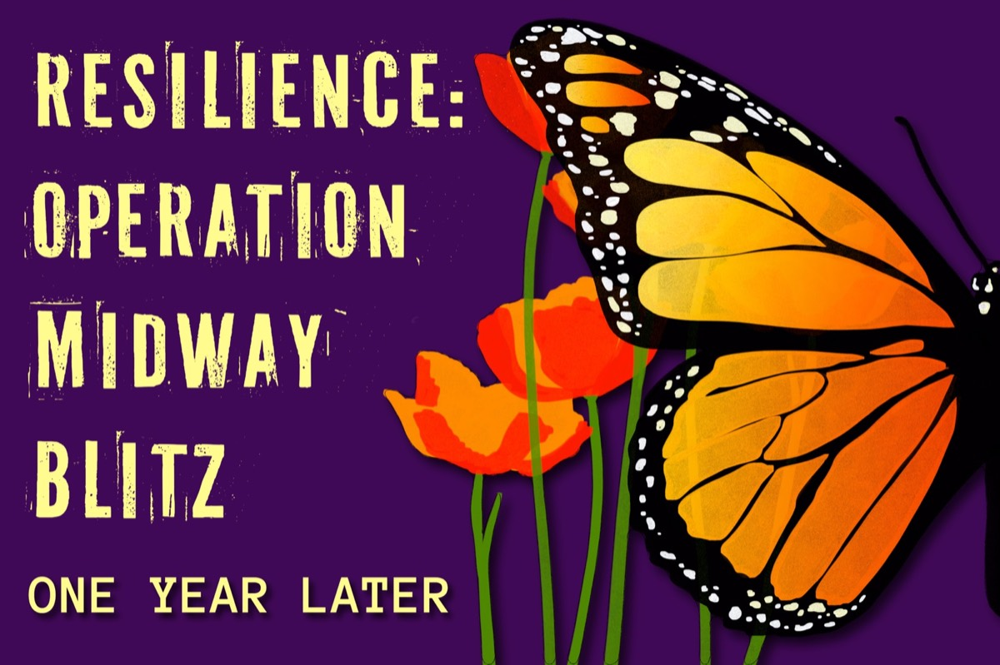

Resilience: Operation Midway Blitz, One Year Later

The Daily Northwestern · Special issue
One year after Operation Midway Blitz, The Daily Northwestern looks back at the events, community response and stories that continue to unfold.
Explore the timelineThe events
A timeline of Operation Midway Blitz
Follow the events and their aftermath in this interactive timeline.
The coverage
Stories of resilience
Explore reporting from Evanston, Northwestern and El Diario.
01 / Community
Resilience: Evanston
City · Nov. 2, 2026
‘This community will not forget’: Evanston leaders, community members mark one year since Halloween ICE confrontation
City · Nov. 4, 2026Local organizations continue support for immigrants 1 year after federal crackdown
City · Nov. 4, 2026‘¡Hola communidad!’: Evanston Latinos members reflect on history of community resilience
Campus · Nov. 3, 2026A year after Operation Midway Blitz, know your rights on and off campus
City · Nov. 5, 2026A year after Operation Midway Blitz, Evanston faith institutions adapt response to ICE
Latest Stories · Nov. 5, 2026One year later: A timeline of ICE activity, community response in Evanston
02 / Campus
Resilience: NU
03 / En español
El Diario
El Diario coverage will be added here as article links are ready.